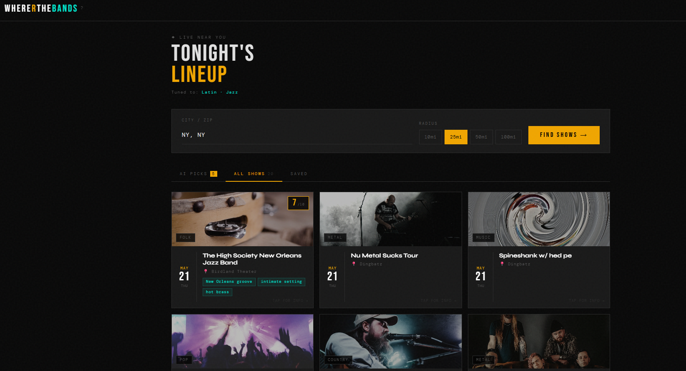

Products that solve
real problems.

Muse Map
Jersey City's Poet Laureate, Melida Rodas, needed to centralize the city's scattered cultural calendar — and fund her non-profit at the same time. The solution: an interactive map and event platform where local artists discover what's happening, while paid subscriptions let organizers post their own events — turning a community resource into a recurring revenue stream for the non-profit.

Houses4Us
Quetzal Consulting was losing hours each week to manual Census data lookups for every Affirmative Fair Housing Marketing Plan it filed with Jersey City's Department of Affordable Housing. The solution: an automation tool that turns hours of per-property busywork into minutes — saving the owner several hours every month across an entire real estate portfolio, and freeing them to take on more clients.

WhereRTheBands
Local concert listings are scattered across a dozen platforms, leaving fans guessing where to spend their night. The solution: a discovery app that pulls those listings into one place, then layers Anthropic's Claude AI on top — users pick the genres they love and the app surfaces the shows most worth showing up for, turning chaotic event feeds into a curated tonight's lineup.